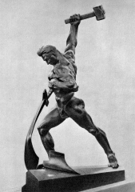

Перековка мечей на
орала за последние годы обошлась нашему народу очень дорого.
Скульптура Евгения Вучетича Перекуем мечи на орала установлена у здания
ООН в Нью Йорке
Долги союзников по мировой системе социализма Правительство России прощает
все последние годы.
Свои же долги на эту же сумму постоянно выплачивает все последние годы:
Внешний долг России на декабрь 2005 (по данным РГ за 13.12.2005 со ссылкой
на Минфин РФ):
Всего - 86,8 млрд.долл.
- в т.ч. странам Парижского клуба - 29,8 (в т.ч. долг СССР - 26,4)
- другим странам - 6,1%
- международным финансовым организациям - 5,8
- коммерческая задолженность - 2,2
- еврооблигационные займы - 31,5
- ОВГВЗ - 7,1
- по кредитам ВЭБ, предоставленным за счет средств ЦБ - 4,3
Всё это - средства многих поколений русского народа, моих родителей и мои.
2006г.